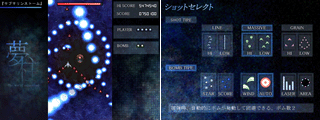
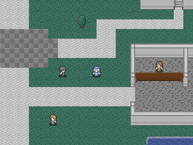

シルバーセカンド開発日誌
■
2009-06-11 (木) ウディタ作品紹介6▼先週は免許センターで試験受けるために勉強しておりました。
あとシル学で溜まってた細かい修正部分を直し中だったり。
本題。
おかげさまでWOLF RPGエディターのVer1.12を公開できました！
【WOLF RPGエディター ダウンロード（Vectorへ)】
これまで数値で座標入力だけしかできなかった場所移動コマンドですが、
今回の修正でようやく移動先マップを見ながら
設定できるようになりました。
一枚のチップ画像をバラして貼り付け直して
マップ画像を作るという行程は、いつもながらちょっと大変でした。
Windowsアプリでのマップ描画/エディットは、
個人的に一つの鬼門だと思います。

そしてオマケ！今回はウディタ作品からアクションRPGを紹介！
『霧留待夢（キルタイム）』 Ver1.04 [作者様サイト/ｱｰｶｲﾌﾞ]

『霧留待夢』は全体的に和風＆ホラー＆幻想的な雰囲気でまとめられている
短編アクションRPGです。早足でクリアして、
「最も強い敵」を倒すまでのプレイ時間が1時間30分、最終的に、
防御系の剣士キャラになりました。そのプレイ範囲での感想です。
全体的なアクション操作はシンプルかつ爽快でありながら、
考えて遊べる成長システムとの混合が、「分かりやすさ」と
「考えさせる部分」をうまく両立させていて、ゲームとして
非常に面白いと感じました。
で、このゲームの何が凄いって、そのインフレ具合です。
「え、こんなにレベルアップしていいの！？」と思うLvアップ速度、
武器を新調すれば攻撃力が数倍に、スキル習得でさらに倍に、
クリティカルが出れば5倍以上のダメージと、プレイしてる側が
心配するくらい恐ろしい速度で成長＆インフレするので、
ついついどこまで行けるのか気になってしまい、
そのまま最後まで一気に遊ばせてしまう強い魅力があります。
パラメータ調整のセンスでここまでワクワクできるのか！
と、私自身驚いたほどです。
また、開発者視点の話ですが、本作のように自由度の高い
成長システムを作ると、たいていの場合、
「とりあえず××のパラメータだけ上げておけば安泰」
というような甘い調整部分が出やすいものだと
経験的に思っているのですが、
この作品はその辺りもしっかり練られていて、
連続攻撃回数に関わるスタミナを上げるか、
それとも攻撃力を先に上げるか、とあれこれ考えながら、
何を優先するか迷いつつ強化するのが本当に楽しいのです。
バランス調整には非常に気を遣われたのではないかと思います｡
説明文を読むと一見極端すぎるように思えるスキルさえも
十分に利用価値があったりして、様々なプレイスタイルを
許容できる、非常にフトコロの大きいゲームだと感じました。
もちろん、倍々になっていくバランスが前提なので、
強い敵はマジで何倍（下手すると十数倍）も強いです。
「この敵、硬すぎる！」と思ったら、その機会に装備やスキルを
調えてみたり、別の場所を探索することをおすすめします。
逆に、弱い敵は何十体でもラクに蹴散らせるのが非常に爽快。
また、文章による表現が全体的に少ないながらも、
「先に何かあるのでは」と期待させてくれる、全体的に
和風で幻想的な雰囲気も個人的に好みでした。
画像はほとんど合成キャラパーツ素材やフリー素材だと
思うのですが、たとえ既存の素材が多かろうと、
使い方によってはここまで効果的な雰囲気作りができるのだと
いうことを教えてくれる、良い作品だと思います。
また、メニューや買い物システムの一部については、
ウディタの基本システムをうまく活かして
くださっている印象でした。
なお、説明書を読まずにプレイすると引っかかりやすい点として、
「ジョブチェンジすると今の職の技が買えなくなってしまう」ので、
必要なスキルを買いそろえていない場合は
うっかり次の職に移らないようにしましょう。
これから先、何回言うか分かりませんが、現時点では
ウディタ史でトップクラスに面白いアクションRPGだと思います。
個人的におすすめの一品。 ■
2009-05-17 (日) アマチュアゲーム開発の問題▼ウディタ関連記事を漁ってたら面白いニュースを見つけました。
「同人・インディーゲーム開発の現状と課題」（4Gamer.net）
http://www.4gamer.net/games/000/G000000/20090508036/(ｱｰｶｲﾌﾞ)
アマチュアゲームの問題点についてのお話です。たとえば、
「（ゲームが）完成しない！9割はお蔵入り」 「コストの割に報われない」
「最近ではゲームを作るハードルが高くなっている」
「宣伝が難しい。ニュースサイトが潰れて、取り上げてもらう場がない」
などなど、ゲーム作ってみた方々なら、どれもすごく分かることばかり。
これらの問題点は、まさにウディタやツクールなどの作品にも、
まったくそのまま当てはまると思います。
が！ ウディタに関しては、ある程度はサイトの規模を利用して
これら問題を解決できる部分もあるので、ウディタ公式サイトを設立して
ツールを使ってくださっている方々を少しでもサポートできればと考えて
色々やってみているつもりです。
でも、これもなかなか効果的な方法ってのが分からなくて難しい。
たとえば作品登録ページを置いてみても、完成させた人がみんながみんな、
利用してくださっているわけじゃないんですよ。
さすが日本人というか何というか、皆さん奥ゆかしい人ばかりでして。
でも、アピールどころではアピールして欲しい！とも思うのです。
せっかく苦労して作品を作ってくださったんですからね。
作品登録ページを経由して登録作品がPC雑誌に載ったこともあるので、
地味に編集者さんのネタ集め場所として
機能してる（かもしれない）場所です。
チャンスは1％でも掴まないともったいないですよ！
遠慮なくどんどん登録してくださいね！
で、いよいよ本題です。
ツール開発側にできるサポートとしてできることと言えば、
上でも問題として挙がっている部分のうちの2つ、
「やる気」と「宣伝」の補助だと思っています。
「やる気」の面では、自分たちの世代だと、コンテストパークや
Ａコン（賞金1000万のゲームコンテスト）が凄かったので、
「たとえ1位は無理でも、一つの目標としてそれを狙うぞー」という
モチベーション効果と、実際にある程度の賞をゲットしたときの
知名度アップ効果が非常に大きかったのですが、
今は大規模なゲーム投稿大会がなかなか見つからないので、
そうそう一発当てられる場がありません。
そんなわけで、結局、自前でウディタコンテストの開催を
決定しましたが、これによってどれだけ完成までの気力を
増進させられるのかは、まだ未知数です。
この辺り、実際の参加者（予定）の方々から、
ご意見や感想をうかがいたいところですね。
「完成までの期限が、仮にでも決まること」というのは、
案外、趣味の開発において効果的なのは私も知っていますから、
何か少しでも効いていればいいんですけれど。
そしてもう一つ、「宣伝」面の補助。
これは今のところ、私の作品紹介と、作品登録ページの設置を行っています。
ウディタ作品の紹介に関しては、私一人では限度があるので、
Vectorさんだとかふりーむさんなどに登録して、もっと日の当たるところへ
出て欲しいなあ、と思うところもあります。
「どういうところに登録すればみんなに遊んでもらえるのん？」
というこの話題に関しては、具体的なアピール方法をドキュメントにして
ウディタ公式ページに置いておくべきかもしれませんね。
他にも、何かウディタ公式サイトに
必要そうな（かつデメリットが少ない）ものの案があれば
提案を受け付けたいと思っています。
個人的には、「宣伝が難しい」に対するさらなる補助として、
「ウディタ作品の開発関連記事を、
トップページでニュースとして取り上げる」
のはどうかと考えたりもしたんですが、手が空かないのでボツってます。
それに、開発なさってる方々も、宣伝のために記事の追加ばかりに注力して
肝心の作品から注意が逸れたら、それこそ本末転倒ですしね。
基本的にはしーんとしててもいいので、
たまに面白いゲームが遊べたらみんな幸せだと思います。
で、ここからは、上のニュースと関係していますが
ウディタとは関係ない話。
「ゲームを作るハードルが高くなっている」が
問題として挙がっていますが、これは私も痛感しています。
自分自身、結構いろいろやれるようになったつもりでも、
ギリギリ波に乗れてるか乗れてないかが、まだ心配な段階です。
「誰も作っていない『理想のゲーム』を自分自身で実現してやる！」が
フリーゲーム制作者のある意味で最大のモチベーションなので、
みんなが作って公開する数が増えれば増えるほど、「理想のゲーム」が
すでに誰かによって作られている確率は上がっていきます。
それを上回ろうとすると、その既存作品以上のエネルギーを要するわけで、
要求リソースのインフレは止まりません。しまいにゃ、
シェアウェア作品並みのクオリティのフリーゲームまで生まれてくる始末。
コンシューマ業界においてのコスト増と、同じ現象が発生しています。
それによる弊害は、「思い切ったことがやりにくくなってしまう」こと。
私も、もっと一作あたりの時間を効率良く使って、
色んなことにトライしてみたいなあと思うところもあるので、
自分の使えるリソースのことは、この機会によく考えたいと思います。
フリーゲームの世界は、業界ができないことをやれる
一種の実験場であるべきじゃないかなあ、と思っているので、
馬鹿をやるのが一番ですよ！！たぶん。
でもそれを「多くの人」に見てもらうためには、やっぱりある程度の
「外見（グラフィック）」が要るという悪循環。
結局、どうしてもコスト増。
私の場合は、それらに対応するために、
合成パーツ系の素材を色々積み重ねているところです。
長くフリーゲーム開発をするつもりなら、
そのような汎用素材は資産になると思っています。
ただ、どんなに外見がダメだったとしても、本質部分がよければ
レビューサイトなどで紹介される可能性があるのが
フリーゲーム世界のいいところです。
逆に、どんなにグラフィックがよかったとしても、
中身がものすごく平凡だったりするとあんまり取り上げられません。
やるなら芯と外見両方、ダメならせめて芯だけでも徹底的に磨く。
今後も、それだけは徹底していきたいと思っています。 ■
2009-04-07 (火) ウディタ作品紹介5▼先日17時間ほど実家に戻っていたので届いた見本誌を見たのですが
（ソフトが載った見本誌は全部実家に送ってるんです。
家族に「頑張ってるよ！」というのを伝える意味で）、
前載ったのと同じ雑誌でまたウディタを紹介してくださっていました。
でもこのあおり文はヤバい！アレと比べるのはさすがにタブーですよ！

※危険そうなところは赤で塗り潰しておきました
ただ、実はエ○ターブ○インの社員さんも、ごくまれにウディタサイトを
ご覧になっているようです
（月あたりのenterbrain.ne.jpアクセスが1とか2になってる）。
なので存在自体はすでにご存じかもしれませんね！
そもそもウディタの影響で脱ツクールしたツクール制作者さんって、
私が知ってる中では3人もいなさそうなので、
やっぱり元の客層が違うんだと思います。
どっちかというと「プログラム一瞬かじったけどダメだった」
という人が多そうな印象。
ウディタは元より「自作度が高い作品を作りたい！」
という人に使って欲しい物なので、
プログラムによる自作にチャレンジしたけど一段階降りたという方には
ぜひオススメしたいと思います。
イベントコマンド型のシステム構築って非効率的に思われがちですが、
直接C++などのプログラムで組んでると、バグが起きたときその原因が
アルゴリズムのミスじゃなくて、
実は関数や変数の使い方が間違っていたり
ポインタをミスってたりすることが原因だったりすることもあって、
バグ調査のカオス度がとんでもなく上がってしまう上、
ちょっとミスっただけで強制終了級のエラーが頻発したりして、
非常に危険です。
イベントコマンド型は、その強制終了級エラーが基本的に出ない、
というのが地味に大きな幸せなんですよ。
切り張りしても簡単に再利用できますしね。
個人的に好みです！
そんなわけで今回はウディタ作品レビュー2本！
改良で生まれ変わった一本と、
何とウディタで弾幕シューティングという一本です。

蛍の宿花 [現在DL不可] 作者：ユノ さん
謎解きアドベンチャーRPGです。プレイ時間はサクっと攻略できれば
約1時間ほど。第一回ウディコンに投稿されたものなのですが、
本作品はそこで受けた意見をもとに、より遊びやすく、面白く改善され、
Ver2へと進化を遂げた作品です。
さすがに指摘された部分をしっかり改善して作り直された作品だけあって
隙らしい隙がない印象です。実は初期バージョンは、何かが足りなくて
途中でプレイを中断してしまっていたのですが、
（他にも目移りする作品が多かったのと、時間がなかったのも要因）
Ver2の本作は足りないと思っていた部分が隙無く補充されていて、
最後まで夢中で遊ぶことができました。
よくあるRPGでは、
「戦闘」と「物語」と「謎解き」は完全に分離していて、
それぞれ異なる部分ではお互いの内容に触れられることは
ほとんどありませんが、このゲームでは「戦闘」と「物語」と「謎解き」の
あらゆる要素に意味があり、密接に絡み合って一体となっている点が、
ゲームへ没頭させるのに非常に高い効果を果たしていると感じました。
たとえばただの移動中でさえ、
「素手ならとっさのことに対応できるから安全に進めるが、
ナイフを装備したままだと足を踏み外してしまう」ような
場所があったり、敵と遭遇したときは現在手持ちのものを武器にして
最初のターンを戦わねばならなかったりするといった具合に、
どんなシーンでも現在の様々な状況を理解し、一挙一動、
常に先を予測して準備を怠らない行動が要求されるので、
ただザコ戦を繰り返して進んでいく普通のRPGとは
まったく違った面白さがあります。
もちろん、こういった持ち替えを容易にするために、
Shiftボタン一発で出るリングコマンドからすぐ装備変更できるという点は
このゲームにおいて極めて重要な部分です。
もし、このシステムがなくて、基本システムの装備欄からしか
持ち替えができなかったとしたら、いくら面白くても、
面倒くさくてやめてしまう人が増えてしまったことでしょう。
「必要なシステムがたった一つ足りないだけでガクンと評価が落ちる」
ゲーム開発には、そんな危険が常に潜んでいます。
もちろんこの作品はそんなことはなく、他のレビュー作品と同様、
必要なものを確実に充足させている点で素晴らしいゲームと言えます。
この装備変更機能の発想もそうですが、コマンドのインターフェースは、
「多用するコマンドは、より少ない操作で行えるようにする」という点が
非常に重要です。私自身、いつも腱鞘炎気味ですし、
塾通いの皆さまやデスクワークの皆さまも割とそうでしょうから、
キー押し回数が少なく済むように配慮されている作品は
高い評価を得られる素質があると思います。
何より、操作における「面倒くささ」は
ゲームをくじけさせる要因として割と大きいものですから、
それをきっちり省くことに成功した作品は、非常に強いと思います。
全編に渡って「常に考え続ける必要がある」ゲームなのですが、
その要素は、RPGを面白くするために極めて重要なものの
一つだと思います。このゲームは、考え続ける面白さを
非常によく伝えてくれる作品ではないでしょうか。

夢柱 [Vector/DLページへ] 作者：Pの人さん
これはもはや「すごい！」の領域、弾幕シューティングゲームです。
RPGエディターのレビューなのに一体何を言っているのか分かりませんが
弾幕シューティングゲームです。
単に弾幕シューティングを作っただけでも凄いのですが、
それよりも特筆すべきはそのグラフィックの美しさ。
加算減算何でもござれ！個性豊かな弾幕といい、綺麗な背景といい、
スクリーンショットの美麗さは現ウディタ史上でトップでしょう。
ですが機能面においても非常に充実していて、たとえば数ドット単位の
「小さなよけ」と、そうでない「大きいよけ」の両方を可能にするため、
サブキー（Shift）で移動速度をゆっくりにできる機能があったり、
敵のライフがなくなりそうになるとダメージ音が変わったりなど、
地味ながら必要そうな機能が満載されているのが素晴らしい。
また素材面でも、自然にゲームに溶け込ませられる効果音を
しっかりチョイスしてい点なども含め、適切な素材を確実に
充実・吟味している点は非常に好感が持てます。
新しいことや無茶なことに挑戦すると、たいてい何かが
おろそかになってしまうものなのですが、そういう隙がないのは
ゲーム開発に慣れた人が出せる渋みと言えるでしょう。
個人的にステージの構成で面白いなと思った点ですが、
本作品は「ボス戦時間の占める比重がかなり大きい」のが特徴です。
このゲームで採用されているシステムでは、ボスの攻撃パターンごとに
耐久力が設けられていて、それを削りきると次のパターンに入るのですが
これはなるほどと思いました。
よくあるSTGにおけるボスの攻撃パターンは、いくつかあっても
一巡したらまた同じのを繰り返すことが多いので、
「とりあえず一通り攻撃に慣れたら後はパターン通りに動いて倒せばいい」
という展開がけっこう多く、
そのため飽きが来る前に倒させようということで
割とあっさりボスが死んじゃうよう設定されていたりして、
ボスのキャラ性をアピールするには時間が足りないなと
思うことがありました。
それに対し、この作品のように1ゲージごとに
ダイナミックに攻撃を変化させる手法なら
長時間の戦闘をしても飽きにくいため、上記の問題に対応できそうです。
この発想は、ボス戦を長く、かつ、ボスのキャラクター性を強く演出したい
ゲームにおいては、非常に使えそうな手段ではないかなと思います。
STG以外にも応用できるかもしれません。
難易度は、一部ちょっと難しい場面もありますが、全体的に弾速が
そこそこなので割と直感でプレイできるのが良いところだと思います。
ときどきパニックになってアワワワ言うのも一つの醍醐味、
シューティングが苦手な人でも無限コンティニュー機能があるので安心。
STGが苦手な方は、作者さん自身も初心者向けとおっしゃっているボム、
「MASSIVE」の「AUTO（被弾時に自動ボム発動）」がオススメです。
残機が実質的に3倍になるので、クリアを目標にする場合は強力です。 ■
2009-04-03 (金) ウディタ高速化・一段落▼ミサイル報道見てると今の日本どう考えても戦争状態。
ていうかエイプリルフールの午前中に
「エイプリルフールは午前中までだよ」
って言うのやめてください！クレタ人は嘘つきですか！？
あ、ちなみに誕生日に誰にも祝ってもらえなかったのも嘘です。
家族と戦友から一言頂きました幸せ者ですよ。
シルフェイド学院物語ですが、やっぱりいじったそばから
内容が反映される段階になると凄く楽しいです！
データを増やしやすいようにと、色々考えて時間かけて
下ごしらえ的に作ってきた部分が今になって効いてきました。
これまで作ってる最中は目に見える変化がなくて、
「なんでこんな時間かけて汎用性上げなきゃいけないんだ……」
とか思ってましたが、その汎用性のおかげで
後半開発に入ってからのペースがハンパじゃなく向上！
ガンガン行きますよ！
特に「パーツ合成」構想は、
戦闘グラフィックのようなデフォルメキャラには
猛烈な効果を発揮していて、膨大なキャラが登場するゲームにおいて
全員分の戦闘キャラ画像を作りやすいという点が便利すぎます。
【最近の進行状況】
3/27 「スキルの強化」処理の基本処理を作成。
3/28 戦闘システムの描画機能を洗練、
アルバートのバトルグラフィック作成
あと銃の射撃モーションも裸ポーズだけだけど完成！撃つと薬莢飛ぶよ！
3/29 戦闘の描画方法を大幅改革。服とベース部分（裸）をバラして、
重ねて表示することで、肌の色変化に対応。黒い人や緑の人もＯＫ！
戦闘画像用のパーツを色々追加 ポニーテールとかナダ・セトヘアー追加。
3/30 合成パーツを増やしてNPCモブキャラを5体ほど追加
3/31 頭痛で作業が進みませんでした
4/1 「自由行動」処理の最終調整や、ウディタのプログラム修正など
4/2 ウディタのバグ取り＆プログラム修正続行。
ピクチャ処理を高速化しようと頑張ってみたものの、テキトーに作った
力ワザの方が格段に早くて泣く、ボツ。そして力ワザを正式採用。
ということで、ウディタの高速化はとりあえず一段落しました。
「夢柱（ウディタ製弾幕シューティング）」がVer1.10時の
3倍オーバーの速度で動く（かも）というレベルまでは向上しています。
変数操作に至っては、1万回あたり32msかかっていたのが今や8msに！
100msあたり12万回計算できるようなので、
以前の結果のRGSSの45万回にちょっとだけ近くなりました。
が、実はループ内に置かずに普通に変数操作を並べると、
100msあたり27万回も計算できることが分かりました。
回数付きループ処理自体でかなり時間を食ってたようです。
ということで、今度はRGSSとウディタの両方に対し、
「for（回数付き繰り返し）ループ内に10個の変数操作を並べて」
処理時間を計測してみました。結果を比較すると以下の通り。
【100ミリ秒あたりの変数操作処理回数】（ループ内に10個の変数操作文）
RGSSスクリプト $A = $A + $B 68万回
ｳﾃﾞｨﾀ変数操作 ｺﾓﾝ0=ｺﾓﾝ1+ｺﾓﾝ2 27万回
変数操作に限れば、RGSSの2/5くらいの速度が出るようです、
バンザーイ！
ただ、変数操作だけを速くしても、
実は全体として見るとあんまり速くならなかったので、
変数操作だけでなく自作システムで散々使いそうな
DB操作・ラベル処理・ピクチャ処理・ループ処理なども高速化しています。
その血と汗と涙の結晶がコレ↓！！！動画撮影用アプリケーション以外
何も立ちあがっていない状態で、「Game.exe」だけ入れ替えて
従来版と高速版のイベント処理時間を比較したものです。
ちょっとネタバレ気味ですが、ラクにチェックできる動作が重くなる状況が
ここしかなかったものでして、どうも申し訳ありません。
実験環境はCore2Duoの2.5GHz（1CPUしか使いませんけど）です。
結構速くなったと思いますよ！これまで1GHzのPCで遊んでいた人でも、
3～4GHzのPCで遊ぶのと同じくらいスピードが出ると考えれば
高速化って大事だなあってちょっぴりシミジミできます。
以下は気になったコメント。 ▼追記を開く▼＞あれ、出演予定に見キャラが少ない…？
＞見の主要キャラのエシュター・ガゼル・シーナ・セトあたりは
＞まだ未確定なんでしょうか、と出演希望
きっと出ますよ！！といっても物語の需要に応じて出演させないと、
「出たはいいけど出番少ない」とか「目立たない」とか、
かわいそうなことになるので、
出すならしっかり出番や役割を考えたいところです。
全部オリジナルキャラで作るなら、そういう問題もないんですが、
既存キャラをメインに使う開発ってのは始めてなので、
その辺りが色々難しいです。
見聞録キャラに比べると、幻想譚キャラはまだ掘り下げきれていないので、
そういう意味で使いやすいところがあります。
個性の薄いキャラが二次創作で多用される理由がよく分かりました。
＞更新お疲れ様です。NPCの自動成長機能、とても面白そうですね。
＞ところで成長幅は各キャラごとに固定値でしょうか。
「最終パラメータ」と「初期成長度」、「成長率」が設定可能なので、
ある程度は自由に設定できます。
一部のキャラは初期パラメータのまま全く成長しない、とか、
最初は弱いけど強くなるのがメッチャ速いとか、
最初割と強めだけど成長率は遅いとか、そういう設定も可能です。
＞キャラは総勢何名くらいでる予定ですか？よかったら教えてください。
えーと……出来た分だけ！！
合成顔キャラのNPCもいっぱい出るので、
キャラ数だけはいっぱい出る予定です。
いざとなったら既存キャラを合成顔で再現できますし。
＞モノリスフィアのキャラはシルフェイド系列じゃないので
＞やっぱり学園には出ないんでしょうか？
モノリスフィアもシルフェイド系列なので出ます。
＞正式版のウディタで作るなら、シル見のバグは直ってそうですか？
ツクールの都合で直せなかった問題も直せるハズです。
むしろ、もっと操作をラクにしたい考えです。
マウス操作できるようにするとか。■
2009-03-26 (木) ウディタ高速化進行中▼
ホントはもっとヒマになったらやろうと思っていたのですが、
なぜ今かというと、
発端は第二回ウディコンで、
面白そうなのにやたら重いゲームがあったので
それをもう少し快適に遊びたい（し、みんなにも遊んでもらいたい）
という欲求からでした。
実はすでに、「ラベル処理」やごく一部の「変数操作」だけを高速化した
プロトタイプバージョンを、処理が重いゲームを公開している方に
テストしてもらっています。
たとえば高速化したい主な対象だった
「夢柱」という弾幕シューティングゲームで
すでに一般公開テストを行っていただいているのですが、
この段階ですでに2倍以上の速度が確保できているようなので
（もと17～25msくらいだったイベント処理時間が、7～10msくらいに！）
ちょっと期待してもいいですよ！
といっても、夢柱は「ラベル処理」がボトルネックだったので、
これを高速化したのが一番大きかったんですけれどね。
この「ラベル処理」は従来版だと、ツクールと同じく、
「イベント内を上から一行ずつ探索して、
どこにジャンプ先があるかを調べて、
見つかったらそこへジャンプする」
というアルゴリズムで動いていたのですが、
これだとイベントコマンドの量が多い場合、
探索の負荷がバカにならないという問題がありました。
新版はそんなことせず、一瞬で目標地点に
ジャンプできるようになってあるので負荷はほぼゼロになったのです！
（ただし「\cself[3]」などの特殊文字がないことが前提）
といった感じの改善を行っていました。
高速化するにも、参考となるゲームがないと
「何が重いのか」「どこがボトルネックか」
という観点での高速化のメドが立たないので、メッチャ複雑な処理を
頑張って組んでくださっている作品は
参考にさせていただきたいと思っています。
このウディタの高速化、
正式版では「変数操作」と「DB操作」の2つに関して、
約3倍速くすることを目標にしています。
約一ヶ月前までは、高速化に対してうんうん唸っていました。
高速化は、プログラム的な意味での堅牢性を考えると色々問題があって、
これまでの処理が「命綱を付けた上で石橋を渡る」くらいの安全度なら、
新しい高速処理は「崖上のロープ一本の上を何も付けずにダッシュする」
くらい危険なことです。たとえば、変数の指定が間違ってたら、
エラーも何も出ずにゲームが強制終了！という事態が起きかねないのです。
しかも「エラーを判定する処理そのもの」が結構大きい負荷になるので、
高速化を考えた場合、どうしてもエラーチェックを
省かざるを得ないんですよ。
それでも、コマンドの指定が間違っている時はエラーを出したいし、
合っているときはエラーチェックせずに処理させたい！
あ、ここでの「エラーチェック」ってのは、
例えば変数の指定が間違ってたら
「指定が間違ってるよ！」ってエラーが出るじゃないですか、
ああいうのですね。
それをなくしてしまうと、
エラーが起きたとき意味不明でデバッグが大変すぎます。
でも速くしたい。この辺りの兼ね合いがあって
高速化に踏み切れませんでした。
デバッグ用EXEと高速版EXEファイルを
両方用意するという手もありましたが、
それやると、片方でエラーが起きて片方で起きないという意味不明な状況が
起こりかねないので、なるべくそれも避けたいと思っていました。
おそらく両者の処理が全然違うものになるので、デバッグ文が入ってるか
入っていないの単純な差だけじゃ済まないからです。
単純に以後の開発にかかる時間が2倍になるので、それはよろしくない。
「処理の安全性を維持したまま高速化する」にはどうすればいいか？
ある日簡単な方法を思いつきました。その方法とは、
「処理が安全であるかどうかをゲーム開始時に全部チェックして、
安全であることが確定したら高速なイベントコマンド処理に変換する。
エラーの危険性がある処理は、これまで通り普通に処理する」
です。あまりに単純な発想ですが、オプション機能がゴテゴテ付きまくりな
ウディタにおいては、これが異様に効果的でした。
ただ新たな問題は、その「安全かどうかのチェック」が間違ってると、
これまたエラいことになってしまうということです。
これはウディタユーザの皆さまにもデバッグを
手伝っていただくことになるかもしれません。
というかこれまでの経験的に言って、
何も起きずに終わることは有り得ません。
そんなわけで、より高速になった次回バージョンをお楽しみに！
これでシルフェイド学院物語も低スペックで
快適に遊べるといいなあと思います。■
2009-03-12 (木) 公式ウディコンが窓の杜に▼コンテストに誰一人として普通のRPGを送ってこなくて、
「これ何のツールのコンテスト？」って聞かれたい、
それが夢です。冗談です。
ていうか第二回非公式ウディコン(ｱｰｶｲﾌﾞ)で、
すでに10本中3本がシューティングですよ！？
最近ウディタの話題ばかりで、
ゲームを楽しみにしてくださっている皆さまには
少し申し訳ない感じです。シル学はシル学で順調に進んでいますよ。
それはそうと、
「公式ウディコンも、きっとウディタ身内だけのコンテストになるよなぁ」
と心の底では思いつつ、でもみんながちょっとでも暖まれたらいいなと思って、
ちょこっと焚き火する程度の雰囲気でやるつもりだったんですよ。
気が付いたら色んなところに火が付いて炎上してる気がしてきました。
注目していただけるのはとても嬉しいのですが、こんなへんぴなコンテスト
紹介してもらっていいのかなあ、という気も。
【窓の杜】フリーゲームのコンテスト“WOLF RPGエディター コンテスト”が今夏開催(ｱｰｶｲﾌﾞ)
（公式）WOLF RPGエディターコンテスト
にしても「賞金などは用意されていないが、
優勝者は名誉と実績を得られるという」
とか書いてあると、「就職内定率110％の実績！！」とか
「南の洞窟には伝説の剣があるという話じゃ……ゴホゴホ」
な臭いがしてステキです！
しかも何だか私が出すことが割と確定っぽい書き方されちゃってますよ！？
シルフェイド学院物語が終わってからだと、
ちょっと時間がなさすぎなのが問題。
どうせ出すなら1位を狙える作品出したいしなあ、うーん。
なお、公式ウディコンに私が参加する事についての反応はまちまちで、
「うおおおもしかするとウルフ野郎を
ブッ倒せるチャンスだぜええ燃ゆる！」
というのと、
「元のファン数が違いすぎるし、
普通にウルフさんが優勝するんじゃないかなあ」
というご意見の両方を見かけました。どっちも分かります。
前者の件については、もし私自身が「参加者のやる気の源」という意味での
中ボス的存在になれるなら、それはそれでとても嬉しいなあ、と思う反面、
後者の件は、アクセスの中核である
この本家サイトでウディコンを宣伝してしまうと、
私の事について前知識がある人ばっかりなだれ込むわけで、
単純にウディコンを宣伝すること自体が
組織票行動に繋がってしまうわけですよ。
この話題は裏で話してるときも散々議論したんですが、そのときの結論は、
結局「匿名で出すくらいしか対策ないんじゃないか」という感じでして。
でも全力出すなら、たぶん絵も描くからバレバレですよってんねん、って話。
私は（今回じゃなくてもいつか）出たいと思ってるんですが、
イベントが冷める要因は作りたくないんです。出たものか出ないものか。
何はともあれ、このお話は私が参加できるメドが
付いてから考えたいと思います。
もともと、質だけを確実に評価するために
審査員審査システムを用意してますから、
これがうまいこと機能してくれればハンデは小さくなると思います。
コンテストにおける私の目標は、
一位を取ることではなく（出るなら欲しいですけど）、
コンテストをより面白くするために運営すること！ですので、
どう考えても一般投票がSmokingWOLFが有利だろって話なら、
主催者権限で何らかのハンデを付けることも辞さないつもりです。
そこだけはご理解いただきたいと思います。
とか自信マンマン言うと普通にボロ負けするフラグ。
ただ、もし万が一出すと決まった場合は、
私は納得の行かないものは決して出しません。
他の参加者の皆さまに敬意を表する意味でも、
出すなら当然、本気作品です。
以下はいただいたご意見です。
＞ウディコン、体験版として公開しちゃったソフトは
＞応募できないんですか？
というご意見をいただいたので規約を少し変更してもらいました。
過去に体験版を配布していても、完成品になっていれば応募可能とします。
＞作品は届き次第公開していくようですが、
＞一斉同時公開した方が盛り上がるのでは？
はい、たぶんそちらのほうが瞬発力は高いと思います。
ですが、今回は作者側の都合を優先する方針で、
バグ修正や調整のための時間を設けるために順次公開制にしました。
また、この公式サイトからリンクを貼ったときが
最も人が流入する時期になるでしょうから、
ある程度盛り上げ度合いを調整できるだろう、という目算もあります。
投稿するタイミングによってプレイヤー数や
ゲームへの印象も少しだけ変わるので、
作者の方はその点もご了承ください。基本的には、
「早ければ早いほど総プレイヤー数が増えるが
印象が薄れてる可能性がある」
「締め切り直前であるほど審査時の印象がホットになる代わりに、
一気に山ほど作品が来て埋もれてしまうと、
スクリーショット負けしている作品がプレイされない可能性がある」
ということになると思いますので、
その範囲で好きなタイミングを見計らってください。
なお応募期間中は、作品のダイナミックな修正も許されているので、
応募期間に出た意見（苦情？）に応じて、例えば難易度選択機能を付けたり、
説明が分かりにくい部分を分かりやすくするなど、
必要な修正を行って下さい。
審査員は最終的に、「全ての修正を加味した作品内容」を審査します。
なので、早めに出すことも一概に損とは言えません。
遊ぶ側の皆さんには、「期間内において最大限面白くなった作品」を
遊んでいただけるようにするつもりです。 ■
2009-03-05 (木) 公式ウディタコンテスト▼とうとうWOLF RPGエディターも公式サイト一周年！ということで、
気晴らしにウディタのプロモーションムービーを作ってみました。
この一年で色々機能が増えました。合成音声機能の例も載せてます。
以下の動画は、ウディタの説明などの際に、
好きに転載（というかYoutube貼り付け）してくださって構いません。
22:35 非公開になってて見られないのを修正しました！
ご迷惑をお掛けしました。自分は普通に見られるからついうっかり！
イラストにpochiさんとKasaneさんの画像を、
作品紹介に公式やらウディコンで上がっていたゲームを
掲載させていただきました。いやいや載せられるとマズいよ！って場合は
ご連絡していただければ対応いたします。
ついでにもう一つ一周年記念として、ウディタ公式でも
いっちょゲームコンテストを開いてみようかというお話になりました。
前々から色々ルール考えたり、（実現可能なレベルの）審査方法を
どうすれば実現できるかで激論をかわしたりとか、
色々密かに動いていたのですよコレが。
ウディタコンテスト公式サイト（新ｳｨﾝﾄﾞｳ）
すうさんが作ってくださった仮公式サイト。私が色々修正を加えています。
規約文などの一部は、3分ゲーコンテストを
参考にさせていただいております。
【審査方法】
まず気になる審査方法ですが、
審査員による審査と、一般審査の両方で行います。
得点方式は3分ゲーのものをとりあえず採用。審査員も一般審査も、
個人的に一番だと思うもの、二番目だと思うもの、その他良かったもの、
をそれぞれ選んでコメントを付け、
その票数に応じて点を付けて結果を決めます。
状況によって最適な手法があれば、随時それに変えていく予定です。
ホントはシステムとかグラフィックとか細かく項目に分けて評価したいなと
思うんですが、評価しきれない作品だった場合に困るのと、
それでゲームそのものの直感的な良し悪しに関わらず
評価が決まるとマズいので、仮にそれらで採点するにしても、
順位とは関係ない位置づけにする予定です。
【審査員】
審査員の人は、私の独断でぼちぼちスカウトしていく予定です。
というかすでに何名か決まっています。
「システム自作できるほどにウディタに詳しい人」で、
かつ「今もウディタをアクティブに使ってくださっている人」
をスカウトする予定ですが、
そのほとんどがコンテストそのものにもきっと参加しそうなので、
どうせだから「ウディタ熟練者」かつ「コンテストに参加しそうな人」の
この両条件を審査員の条件とさせていただきます。
どっちも私の主観になってしまうんですけれどね。
もちろん、そんなわけで審査員の方も作品を応募することができます！
しかし自分の作品にはコメントと点が付けられないので、
それが困る場合は、メールが届いても放置するなり断るなりしてください。
なお審査員は、一応全部の作品を遊ぶ義務がありますが、
最後まで遊ぶかどうかは保証しません。量によっては死人が出るからです。
そして、良いと思った作品にコメントと点を付けます。
【スケジュール】
開催シーズンは8月10日作品応募～9月10日に結果発表です。
おそらくシルフェイド学院物語が完成した後なので大丈夫だと思いますが、
ヤバそうだったら運営を他の審査員の人に
お任せすることもあるかもしれません。
ていうかぶっちゃけ、時間があれば私も作品投稿する気マンマンですよ！？
という感じです。コンテストに対する皆さんのご意見も募集中です。
こんな案があるよーとかこんなのやってみてほしいとか、
何かあれば記事左下の「拍手」ボタンからどうぞ。
一回押すとコメント入力画面が表示されますし、
コンテスト公式ページの一言メッセージからでも構いません。
以下は気になったコメント。 ▼追記を開く▼＞シルノ購入時のあまりＷＭを律儀にもまだとってあるんですが
＞これとっとく意味あります？ 使っちゃっていいですか？
使ってください。今は1円単位で買えるようになっているらしいので
大丈夫っぽいです。
あ、ちなみにWM売ってるとこわかんないとか、お小遣い出したくないとか、
そういう場合は無料でウェブマネーを手に入れる手段もあるので
（オンラインの懸賞に応募するなどで
ウェブマネーがもらえるサービスがある）
「ウェブマネー 無料」とかで検索してみてください。
ただしフリーのメールアドレスは忘れずに。
＞公開一周年記念効果かウディタでついにMP3が使用可能に！
＞うれしいんですけど、以前仰られていたMP3の
＞規約云々のほうは大丈夫なんでしょうか…
大丈夫じゃなくても35万円くらい……って高っ！
無料のソフトには請求かからないと思いますけどどうなんでしょうね。
安心のためにOGG形式をご利用になるのが安全ではあります！
＞（シルフェイド学院物語が）四月までに完成するんですかィ？
無理！でもがんばります！■
2009-02-13 (金) 言語とモノリスの速度▼
某保険屋さんの巨大アヒルちゃんを見たら今日はケーキをかぶってた、
何を言っているのか分からないと思いますがウルフです。マジです。
今日は色んなものの速度について検証してみました。
【C言語とRubyとウディタの計算速度】
前回もウディタの処理速度についてチラっと触れましたが、
実は裏で詳しく検証したデータを取っていたので、そのお話をします。
比べるのはC++とRubyとウディタの3種類の単純な変数処理についてです。
まず、C言語直打ちでX = X+Y;をコンパイルしたものを計算させた場合と
ウディタの変数操作1回分を比較すると、
さすがに1300倍くらいCの方が速いです。
また、Ruby（ツクールXP）のスクリプト内で「$X=$X+$Y」だけを行うと、
ウディタの変数操作の約13倍くらいの回数、計算することができます。
以下は100ミリ秒（0.1秒）あたりの単純な計算可能回数です。
（RGSSは時間計測関数が分からなかったので、
ハングアップエラーが出るまでの
10秒間に何回計測できるかを算出し、逆算しています）
【100ミリ秒あたりの計算回数】（CPU 2.5GHz環境下）
※どれもfor文または回数指定ループ内で実行したもの
C++ ： X=X+Y[※要コンパイル] 4500万回
Ruby(RGSS) ： スクリプト $X=$X+$Y 45万回
ウディタ ： 変数操作V[0]=V[0]+V[1] 3.5万回
ウディタの変数操作は、変数値を数値に変換する処理とか
元の値を拾ってくる処理とかオーバーフローを避ける処理だとか
バージョン違いを吸収するための処理だとかエラー時の処理だといった風に
おまけがいっぱい必要になるので、どうしてもその分だけ重くなります。
よく考えたら、配布状態のデータをプレイする際だけ
余計なエラーチェック処理を
行わないようにするといった工夫で、
処理速度が少し速くなるかもしれませんね。
余裕があったらこの辺りもチェックしてみたいところ。
にしてもこれ見ると、ウディタは元より論外として
Rubyの処理が思っていたより遅いなあという印象です。
ツクールVX・XPはこのRubyでイベントコマンド処理を作っているので、
例えば変数操作とイベントコマンド制御部分の
1回分を足して14行以上使ってしまうと、
イベントコマンド同士の比較では
ウディタより時間がかかることになります。
逆に、13行以内で作れればツクールの方が速いことになります。
XPは変数操作内だけで150行
（※といってもほとんどwhenの分岐なので詳細不明）ほど
記述されているので、数値が不要な場合は、4行だけで構成されている
「スイッチの操作」を使ってねということなんでしょう。
まあそれ以前に、複雑な自作システムは
全部Rubyで組めって話だと思いますけれど。
でもそのRubyと比べても、やっぱりC++の方が100倍速いので、
速度を追求してスマートに動くゲームを
作りたいならばC++でどうぞ、ってことになると思います。
C++なら、弾幕ゲームを作るとしても単純にウディタで作る場合の1000倍、
Rubyで作る場合の100倍の弾が出せるわけです！ まさに桁違い！
ただ私の中では、高速な「書き換え→テスト」作業が容易な
イベントコマンド型はやはり捨て切れません。
RubyやCみたいに、構文が間違ってたら動かないとか、
コンパイルを要するとか、
そういうことがないのが特にいいです。
あとはウディタの高速化が課題ですね。
ゆっくりできるようになったらもっと処理高速化の検討を行いたいです。
【女神モノリスの速度】
お次は全然実用的じゃないお話！モノリスフィアのお話です。
空想科学なんちゃら読本的な意味で女神モノリスの速度を
マジメに計算したレポートがあったので公開しておきます。
【単位 まずは1ピクセルの大きさを算出する】
モノリスの身長が165cmだと仮定した場合。
ゲーム内では彼女の身長は36ピクセルなので、
1ピクセルは約4.5cmと推定できる。
【本題：モノリスの最大速度を算出する】
モノリスグラビティがレベル10の場合、
モノリスは、真横、または真下方向に
最大速度で秒間960ピクセル移動できる。
その時の秒速は43m、つまり時速は約155 kmである。
だがゲーム内物理法則では、斜め45度で移動すると縦横ベクトル共に
秒間960ピクセルの速度が出るため、その場合の最大速度は時速約220km。
つまりモノリス様は生身で時速220kmで移動できます。
こんな速度で頭ぶつけてもノーダメージとかどう考えてもゴム人間。
以上、知らなくてもよかったモノリス様の最大速度でした。
以下は前々回の黒ウリユ記事に対するコメントです。 ▼追記を開く▼＞あれ…ウリユならデフォルトでこれくらいは
＞言ってきそうなイメージなのですが！
知らない間に人の記憶の中で黒くなってるウリユ。
＞・ウリユの見た目が少し成長したようにみえます
＞・ロリじゃない・・・だと？
＞・ていうかシル学ウリユはいくつくらいなんでしょか？
＞ 成長してるぽいので中高生くらい？
言っておきますが、ウリユはロリキャラじゃなくて妹キャラですよ！？
劇中では14歳（中3）から始まって17歳まで成長する予定なので、
使い回せるようにあんな感じにしています。
＞・黒ウリユも本編にでないでしょうか？
＞・これはいい毒舌・・・何らかの形で実装してもらえると嬉しいです
＞・黒いウリユもまた良しです！
こんなウリユいやだぁぁぁってご意見が一件だけありました。
つまりそれ以外は全部こんな感じ。皆さんＭのかたが多いんでしょうか。
＞うちの業界ではご褒美でござる＞黒ウリユ
どこの業界でござるか。
＞ところで今回のデフォ名はゴンベエとナナシじゃないんでしょーか？
ゴンベエとナナシの他にアランスミシやジェーンドゥなどをご用意！
ということは別に考えてませんが
ゴンベエとナナシでいいような気がします。
サラさんに名前付けてもらおうとしたら「ゴキブリ」とか「うすのろ」とか
付けられたりするのもイヤじゃないですか！？
＞シル学の登場キャラ募集してますけど、名前のある
＞キャラって大体登場確定してたりするんでしょうか？
どっちかというと何もないところから増やしている感じなので
最後までうっかり忘れられているキャラが続発する予感です。
＞リクレールさんをお風呂に入れてもあまり大騒ぎになってない・・・
＞つまりリクレールさんは男の娘だったんだよ！！
「な、なんだってー！」■
2009-02-08 (日) ウディタマップチップ強化計画▼シル学のシナリオ作り始めたら日誌に書き込むネタがないウルフです。
しかも気付かない内にアクセスが1400万ヒットですよ！
さすがにここまで来るともはや祝われないレベル。
「1万ヒット行ったよーやったー！」
と一人で言っていた時代が懐かしいです。
あの当時は、ネットなんてやってる人ほとんどいませんでした……
まだ綺麗だった自分……フフ……。
で、今回はほとんどの人たちが
興味なさそうなWOLF RPGエディターのお話！
この1年で、ウディタWikiにアップされた
二次配布・加工可能素材を集めたり、
綺麗なチップ描いてくださる人からベース頂いたりして、
片手間かつ秘密裏に新しい基本マップチップを作っていたのです。
特にWikiのものは、
質がいいのに数が少ないゆえにあまり使われなかったりして
このまま放置すると非常にもったいないので、ここでいっちょ
テコ入れの材料として使わせていただくことにしました。
Before これまでのマップ

▼
After 次バージョンからのチップ

Afterの上半分がフィールドマップ風、下半分が街の中です。
みんなの力をひとつに！チップ数にして約600点！
マップ素材をアップしてくださった皆さまにはとても感謝しています。
このチップはWOLF RPGエディターの
Ver1.10にて同梱予定です、ご期待下さい。
これでRPGを作るのに最低限必要な素材しか入っていない、
とは言わせません！
ただし敵キャラとか音楽とか音声は
全部拾ってきてねというやっぱり投げやり主義。
でも開発者の人は、（もちろん私自身も含めて）ちょっとくらい
素材集めで苦労してもいいんじゃないでしょうか！？と思う制作者側。
やってみてくださると分かるんですが、素材集めって面白いんですよ！
いかにマイナーで良質な素材を集めるか、という妙な技能が育ちます。
そして素材集めだけで満足して終わってしまったことも、
実は何度もあります！！
素材が自作できるようになると、
そういうことはなくなったんですけれどね。
それはそうと、このツールを作った経緯を書いてて分かったんですが、
WOLF RPGエディターの開発を始めたのは2006年の2月だったんです！
旧開発日誌の2006年1～3月あたりの記事。つまりウディタは
お腹にいるとき（※まだエディターでゲームが作れない時期）から
計算したらもう3歳！
いや待て受精卵から計算するのはおかしい、お腹の中にいたのが
7ヶ月くらいだった気がするので正確には2年と5ヶ月くらいです。
そう考えるとこの子は手間かかりすぎです。
そりゃ普通の人はあんまりこういうツール作らんわ！ と思いました。
これだけの労力を費やしているのなら、ウディタを作る手間で
もう一本くらい別に新作を作れたかもしれません。
でもそう思う反面、これがないと
モノリスフィアが生まれなかったであろうことを考えると、
ちょっと寄り道してきた甲斐もあったというものです。
ただ、もともとアクション用を想定した造りではないので、それ用の
高速な処理機能が搭載されていないのが今のところの難点。
でも、そんなこと言ってるうちに
第二回ウディコンでさっそく弾幕シューティングを
作っておられる方がいて目玉が飛びそうになりましたよ。
当たり判定回数が多い弾幕シューティングは
負荷を下げる工夫が大変なのに
このゲームは処理が軽い！ かなりのやり手です。
モノリスフィアはC++のプログラム部分に
計算が多い処理を入れたりしているので
まだ何とかなってますけど、
イベントコマンドだけでアクション系作るとか
私からするとかなり想定外の使われ方です。もちろん無茶は大歓迎！
こういう作品を見ていると、ウディタのゲームは何が出てくるか
分からないので面白いなあ！ と思います。
ツール作者自身も楽しめるなら、
公開しててこれほどよろこばしいことはありません。
使ってくださっている方々には、感謝の気持ちでいっぱいです。
いつも本当にありがとうございます。
（前回の黒ウリユについてのご意見コメントはまた次回）
Copyright © SmokingWOLF / Silver Second
 カテゴリ: ウディタ
カテゴリ: ウディタ カテゴリ: ウディタ
カテゴリ: ウディタ